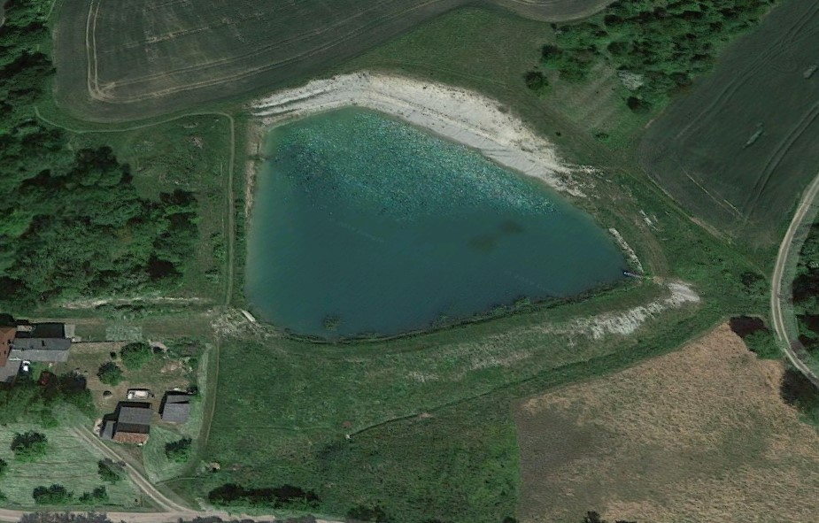

Ubytování
obývací pokoj, kuchyně s jídelnou, tři pokoje (dvě koupelny)
Usedlost se nachází cca 1,5 km za obcí Bílé Poličany v těsné blízkosti zámeckého parku.
Kromě krásného prostředí podkrkonošské přírody nabízí velkou škálu výletních možností, cyklotras, koupání a také sportovního rybolovu v přilehlém (cca 30 m) mimopstruhovém soukromém rybníku majitelů usedlosti (zlevněné pověření k rybolovu pro ubytované - 20%).
V obci – hospoda a prodejna COOP
Ceník
| Položka | Cena |
| základní cena | 12 000 Kč / týden za celý objekt |
| kratší pobyt | 2 500 Kč / den za celý objekt |
| Kauce složená při příjezdu a vratná při odjezdu | 1 000 Kč |
- Období pronájmu: květen až září 2022.
- Závěrečný základní úklid provádějí klienti.
- Cena zahrnuje poplatky obci.
Informace o usedlosti Na Pile č.p. 32 v Bílých Poličanech
| Obytné místnosti | Celkem 83 m2 | Cena |
| obytná kuchyň | 17 m2 | 2 stoly, 8 židlí, chladnička, myčka, mikrovlnka, sporák s troubou a veškeré kuchyňské nádobí i příbory |
| společenská místnost | 25 m2 | rohová rozkládací sedačka, 3 x gauč, 2 x křeslo, 3x konferenční stolek, TV a DVD přehrávač |
| pokoj č. 1 | 12,8 m2 | 2x válenda + gauč |
| pokoj č.2 | 11,9 m2 | válenda + rozkládací gauč |
| pokoj č.3 | 15,3 m2 | 2 x válenda + gauč |
- Ubytování optimálně pro 9 osob (v případě nutnosti max. 12).
- K vnitřnímu vybavení patří 2x WC a 2x sprcha.
- K dispozici je ohniště s grilem a posezením.
Koupání
-
Veřejná koupaliště v okolí:
- Lanžov – cca 4 km
- Zábřezí – Řečice – cca 3 km
- Miletín – cca 4 km
- Dvůr Králové nad Labem – cca 12 km
Výlety
- Dvůr Králové nad Labem - městské muzeum, Les Království – přehrada, ZOO a safari
- Miletín - rodný domek K. J. Erbena
- Hořice – sochařské parky
- Kuks – hospitál, betlém, křížová cesta
- Jaroměř – Josefov – pevnost
- Chlum – muzeum války z roku 1866
- Hrádek u Nechanic – novogotický zámek
- Jičín – památková rezervace
- Huprecht – zámek
- Kost – hrad
- Český ráj – Prachovské skály
- Ratibořice – Babiččino údolí
- Hradec Králové – památková rezervace, muzeum východních Čech
- Adršpašskoteplické skály